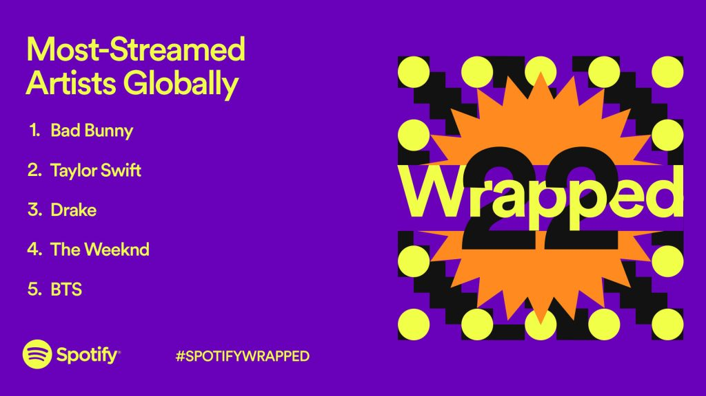
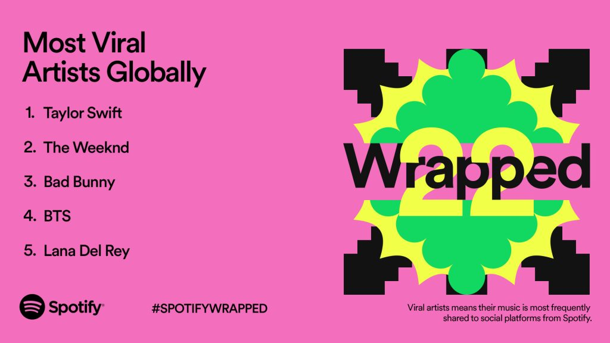
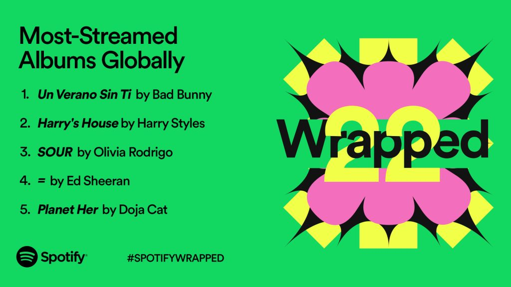

It’s a three-peat for global recording artist Bad Bunny. The singer-songwriter is the year’s most-streamed artist
in the world on Spotify—a spot he’s held since 2020. No other artist has ever accomplished the feat before, so
to celebrate, we’ve turned the heart button on Spotify into the singer’s custom red-heart icon.
Taylor Swift held true to her invitation to meet her at midnight, and it propelled her to become the second-most
-streamed artist of the year globally —and the top artist in Australia, the U.K., Ireland, Malaysia, the Philippines,
New Zealand, Qatar, Slovenia, and Singapore. Rounding out the top five artists are the two very familiar Toronto
powerhouses Drake and The Weeknd, along with K-Pop band BTS.

Plenty of artists had their worlds rocked this year by the power of social media. The most “viral” artists were
those who had their music most frequently shared to social platforms from Spotify. Taylor Swift’s Midnights
release certainly got the world talking, and she claims the top spot as the most viral artist globally.
The second place position goes to The Weeknd, followed by Bad Bunny. Rounding out spots four and five
are BTS and Lana Del Rey.

The Top Global Songs of 2022
Song of the summer 2022 creator Harry Styles takes the coveted honor of having the most-streamed song
the globe with his hit “As It Was.” British indie rock band Glass Animals’ track “Heat Waves” is the second-
most-streamed song of 2022, and fans just can’t get enough. Australian artist The Kid LAROI’s collab with
Justin Bieber on “STAY” is the third-most-streamed song of the year.
Bad Bunny’s “Me Porto Bonito” feat. Chencho Corleon and “Tití Me Preguntó”
take spots four and five, respectively.

The Top Global Albums of 2022
So what collective body of work, in album form, was streamed most in 2022?
From Spanish to English, pop to hip-hop, listeners around the world showed
a variety of tastes. Bad Bunny’s Un Verano Sin Ti takes the top spot for
most-streamed album globally for 2022. Harry Styles‘ Harry’s House comes
in at number two. Olivia Rodrigo’s debut album, SOUR, takes the third
spot for most-streamed album.
